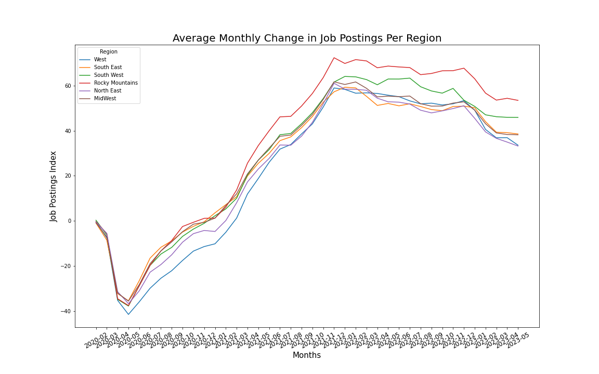
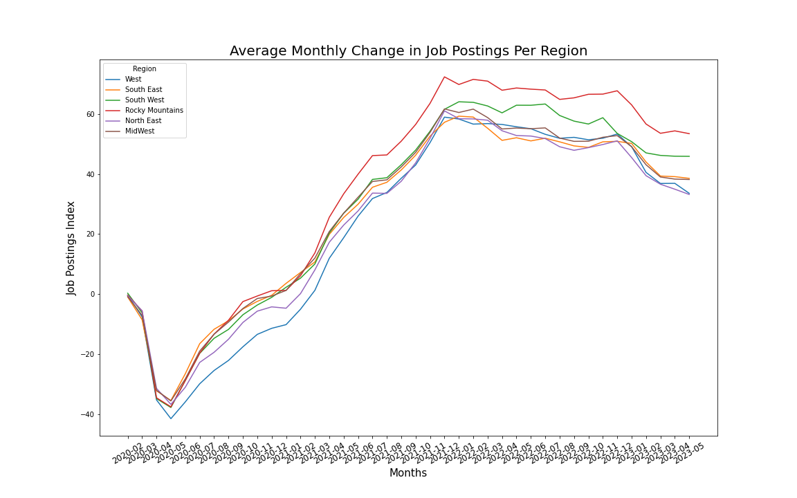

>Nicole Michaud - Portfolio
Data scientist, machine learning engineer, and data analyst with experience in machine learning, statistical analysis,NLP, and data visualization. Completed an 800+ hours immersive data science program through Flatiron School, and possesses a bachelor's of science degree in psychology from the University of South Carolina, graduated with Magna Cum Laude.
Connect on LinkedIn
Relevant Projects
Currently Working on: Chatbot Preference Predictor
Chatbots go head-to-head in generating responses to prompts and users have selected which response they prefer.
Using this data, can we predict which chatbot will produce the more preferable response to users in unseen data?
My approach is to employ NLP techniques to prepare prompt and response data, then to use multi-label classification models to generate predictions.
View Kaggle competition page
Recipe Recommendation System with User Dietary Preference Information
From over 226,000 users and their recipe ratings on food.com, Natural Language Processing (NLP) techniques were employed to categorize users as different diet types.
A multi-task Neural Network model created with Tensorflow Recommenders used text processing to incorporate the diet-types of users while retrieving and ranking the top 3 recipe recommendations for each user.
The recommendation retrieval was then optimized using Scalable Nearest Neighbors (ScaNN).
View full Github repository
Classifying Disaster Tweets with NLP
As part of an ongoing Kaggle competition, I cleaned and pre-processed text data from over 10,000 tweets using Natural Language Toolkit (NLTK) and Regular Expressions (RegEx).
Deployed Scikit-learn’s Multinomial Naive Bayes, GridSearchCV, TF-IDF Vectorizer, CountVectorizer, pipelines, and
classification metrics to create, tune, and evaluate models.
Tweets were classified as being about a disaster or not.
View full Github repository
Spotify Hit Songs Classification
Data from over 63,000 songs with 14 total features was cleaned and normalized using Scikit-Learn.
Exploratory analysis and visualizations were created to uncover important trends in the data.
Models including Decision Tree and Random Forest Classifiers were created, evaluated, and tuned using GridSearchCV.
Model Results and feature importances were interpreted to determine most relevant features for predicting hit songs.
View full Github repository
Gemma Demo for Python Q&A
Demonstrated how to load, use, tune, and generate responses with Google's new open-source Gemma large language models (LLMs) for question and answer capabilities, using FAQs about the programming language, Python.
Tuned models using Low-Rank Adaptation (LoRa) and saw an improvement in generated responses.
View code in Kaggle Notebook
View full Github repository
>Sales/Marketing Research Review for Previous Employer
Compared company sales and placement data to current market data to provide recommendations to stakeholders.
Used past and current internal data on placements/sales, revenue, and marketing efforts, and compared to national trends sourced
from the Bureau of Labor Statistics (BLS).
Presented dynamic visualizations of findings with the goal of improving efforts in areas of marketing, business development, and sales.


 
